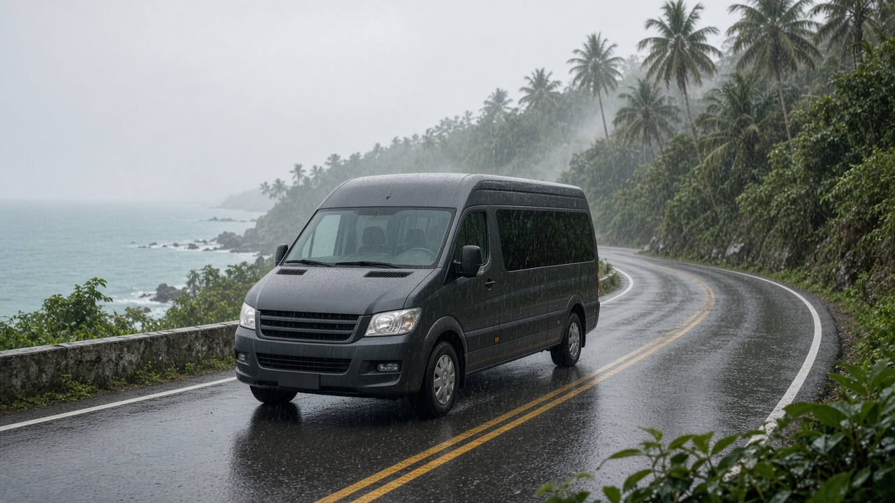

คู่มือรถตู้ภูเก็ต
รถตู้ภูเก็ตช่วงฤดูฝน วางแผนเส้นทางอย่างไร
คู่มือรถตู้ภูเก็ตช่วงฤดูฝน วางแผนเส้นทางยืดหยุ่น จังหวะเวลา ความปลอดภัย และข้อมูลที่ควรแจ้งผู้ให้บริการ โดยไม่รับประกันสภาพอากาศ
25 กันยายน 2026

Infinity Transport Phuket — รถตู้ภูเก็ตช่วงฤดูฝน วางแผนเส้นทางอย่างไร ช่วงฤดูฝนของภูเก็ต (โดยทั่วไปประมาณพฤษภาคม–ตุลาคม) ทำให้การเดินทางด้วย รถตู้ภูเก็ต ต้องคิดมากกว่าแค่ “ไปกี่จุดในวันเดียว” ฝนอาจตกเป็นช่วง ๆ ถนนบางเส้นลื่น การมองเห็นลดลง และเวลาเดินทางอาจยืดกว่าปกติ หากแผนแน่นเกินไป ทั้งวันอาจกลายเป็นการเร่งและเปลี่ยนแผนบ่อยครั้ง
บทความนี้โฟกัสการใช้ เช่ารถตู้ภูเก็ตพร้อมคนขับ ช่วงฤดูฝน ตั้งแต่การกำหนดจังหวะเวลา การออกแบบแผนที่ยืดหยุ่น ความปลอดภัยและการตัดสินใจเรื่องเวลา ไปจนถึงข้อมูลที่ควรแจ้งผู้ให้บริการตอนจอง โดยอ้างอิงรูปแบบบริการจริงของ Infinity Transport & Travel Phuket ไม่มีการรับประกันสภาพอากาศ ไม่สร้างราคา รีวิว หรือเงื่อนไขที่ไม่มีในเว็บไซต์
คำตอบสั้นสำหรับ Featured Snippet:
ช่วงฤดูฝน ควรวางแผน รถตู้ภูเก็ต แบบมีเวลาเผื่อ ลดจุดหมายต่อวัน และเลือก รถตู้เหมาภูเก็ต หากต้องการปรับลำดับจุดแวะได้ แจ้งผู้ให้บริการเรื่องเวลานัดสำคัญ จำนวนคน สัมภาระ และความยืดหยุ่นที่ต้องการ โดยเข้าใจว่าฝนและการจราจรเปลี่ยนแปลงได้ ไม่มีใครรับประกันว่าจะไม่มีฝนหรือเส้นทางจะเร็วเท่าเดิม
สารบัญ
1. ทำไมฤดูฝนต้องวางแผนรถต่างจากฤดูแห้ง
2. จังหวะเวลาและแผนเที่ยวที่ยืดหยุ่น
3. เหมาคัน vs รับส่งเที่ยวเดียวช่วงฤดูฝน
4. ความปลอดภัย การขับขี่ และการตัดสินใจเรื่องเวลา
5. ข้อมูลที่ควรแจ้งผู้ให้บริการช่วงฤดูฝน
6. ตัวอย่างแผนเที่ยวยืดหยุ่นช่วงฤดูฝน
7. เช็คลิสต์ก่อนวันเดินทาง
8. ทำไมลูกค้าจึงเลือก Infinity Transport & Travel Phuket
9. คำถามที่พบบ่อย
10. สรุปท้ายบทความ
11. ติดต่อเรา (CTA)
ทำไมฤดูฝนต้องวางแผนรถต่างจากฤดูแห้ง
ฤดูฝนในภูเก็ตไม่ได้หมายความว่า “ฝนตกทั้งวันทุกวัน” แต่สภาพอากาศเปลี่ยนแปลงเร็ว ฝนอาจตกช่วงสั้นแล้วหยุด หรือตกต่อเนื่องหลายชั่วโมงในบางวัน การใช้ บริการรถตู้ภูเก็ต จึงต้องคำนึงถึงปัจจัยที่ส่งผลต่อเวลาและความสะดวกมากกว่าช่วงฤดูแห้ง
ปัจจัยที่มักส่งผลต่อแผนเดินทาง
หัวข้อ สิ่งที่มักเกิดขึ้น ผลต่อการวางแผนรถ ฝนตกเป็นช่วง ฝนหนัก 30–90 นาที แล้วลดลง ควรมีเวลาเผื่อระหว่างจุด ถนนลื่น โดยเฉพาะเส้นทางขึ้นเขา เวลาเดินทางอาจยืดกว่าปกติ การมองเห็น ฝนหนาและหมอก คนขับอาจขับช้าลงเพื่อความปลอดภัย กิจกรรมกลางแจ้ง อาจหยุดชั่วคราวเมื่อฝนตก ควรมีแผนสำรองในร่ม การจราจร ฝนตกช่วงเร่งด่วน ออกจากโรงแรมเร็วขึ้นอาจช่วยได้
ข้อสำคัญ: ไม่มีผู้ให้บริการรถใดสามารถรับประกันได้ว่าวันนั้นจะไม่มีฝน หรือเส้นทางจะใช้เวลาเท่าเดิม การวางแผนที่ดีคือการเตรียมแผนหลักและแผนสำรอง ไม่ใช่การยัดจุดให้แน่นที่สุด
ดูภาพรวมบริการได้ที่ หน้าบริการ และ Landing รถตู้ภูเก็ต ข้อมูลท่องเที่ยวภูเก็ตอ้างอิงได้จาก การท่องเที่ยวแห่งประเทศไทย
จังหวะเวลาและแผนเที่ยวที่ยืดหยุ่น
หัวใจของการใช้ รถตู้ภูเก็ต ช่วงฤดูฝนคือ “จังหวะ” ไม่ใช่ “จำนวนจุดให้มากที่สุด” แผนที่ดีควรมีเวลาว่างระหว่างกิจกรรม เพื่อรองรับฝนที่อาจตก หรือการเปลี่ยนลำดับจุดแวะเมื่อสถานที่กลางแจ้งไม่เหมาะ
หลักการวางแผนจังหวะเวลา
ลดจุดหมายต่อวัน จาก 4–5 จุด เหลือ 2–3 จุดหลัก พร้อมจุดสำรองเผื่อเวลา 30–60 นาที ระหว่างจุดสำคัญ โดยเฉพาะเส้นทางขึ้นเขาหรือข้ามโซนจัดกิจกรรมกลางแจ้งช่วงเช้า หากเป็นไปได้ ฝนช่วงบ่ายพบได้บ่อยกว่าในบางวันมีแผนในร่ม เช่น คาเฟ่ ห้าง หรือพิพิธภัณฑ์ สำหรับช่วงที่ฝนตกหนักอย่าผูกกับเวลาแบบตายตัว สำหรับกิจกรรมที่พลาดไม่ได้ ให้ออกจากที่พักเร็วขึ้น
ตารางเปรียบเทียบแผนแน่น vs แผนยืดหยุ่น
เกณฑ์ แผนแน่น (4–5 จุด/วัน) แผนยืดหยุ่น (2–3 จุด/วัน) เมื่อฝนตก ต้องตัดจุดหรือเร่ง ปรับลำดับได้โดยไม่เครียด ความเหนื่อย สูง ขึ้นลงรถบ่อย ต่ำกว่า มีเวลาพัก เหมาะกับ ทริปสั้น โฟกัส 1–2 ที่ ครอบครัว ผู้สูงอายุ กลุ่มใหญ่ รูปแบบรถ เหมาคันมักเหมาะกว่า เหมาคันหรือครึ่งวัน
เคล็ดลับ: ลองเขียนแผนเป็น “จุดหลัก” และ “จุดถ้ามีเวลา” แทนการกำหนดทุกจุดเป็นบังคับ แล้วแจ้งผู้ให้บริการว่าลำดับอะไรสำคัญที่สุด
อ่านแนวทางเที่ยวด้วยรถตู้ได้ที่ คู่มือรถตู้เที่ยวชมเมืองภูเก็ต และ เส้นทางรถตู้ภูเก็ตที่สะดวก
เหมาคัน vs รับส่งเที่ยวเดียวช่วงฤดูฝน
ช่วงฤดูฝน ความยืดหยุ่นมักสำคัญกว่าช่วงอื่น เพราะแผนอาจต้องเปลี่ยนเมื่อฝนตกหรือถนนลื่น การเลือกระหว่าง รถตู้เหมาภูเก็ต กับรับส่งเที่ยวเดียว ขึ้นกับว่าคุณต้องการปรับลำดับจุดแวะได้แค่ไหน
ตารางเปรียบเทียบ
เกณฑ์ รับส่งเที่ยวเดียว เหมาคัน (ครึ่งวัน/เต็มวัน) ความยืดหยุ่น ต่ำ จุดรับ–ส่งตายตัว สูง ปรับลำดับได้ในขอบเขตที่ตกลง เมื่อฝนตก ยากต่อการเปลี่ยนแผน ปรับจุดแวะหรือเลื่อนเวลาได้ง่ายกว่า สัมภาระ ขึ้นลงรถทุกเที่ยว เก็บในรถได้ระหว่างแวะ เหมาะกับ รับส่งสนามบิน โรงแรม ทริปเที่ยวหลายจุด การประเมินราคา ต่อเที่ยว ตามช่วงเวลาที่เหมา
เมื่อไหร่ควรเลือกรับส่งเที่ยวเดียว
รับจากสนามบินไปโรงแรม หรือส่งกลับสนามบิน โดยไม่มีจุดแวะ
เวลานัดสำคัญชัด เช่น ไฟลท์ หรือนัดทำธุระเฉพาะจุด
ไม่ต้องการเปลี่ยนแผนระหว่างทาง
เมื่อไหร่ควรเลือกเหมาคัน
มีหลายจุดแวะและอยากปรับลำดับได้เมื่อฝนตก
มีสัมภาระเยอะ ไม่อยากยกขึ้นลงรถหลายครั้ง
ต้องการให้คนขับช่วยดูแลเส้นทางตลอดช่วงเวลาที่เหมา
รายละเอียดรูปแบบบริการและแนวทางราคาเบื้องต้นดูได้ที่ หน้าราคา โดยราคาจริงขึ้นกับรายละเอียดทริป ควรยืนยันกับทีมงานก่อนจอง
เคล็ดลับ: ช่วงฤดูฝน การเหมาคันครึ่งวันมักคุ้มกว่าการเรียกรถแยกหลายเที่ยว หากแผนมีจุดแวะ 2 จุดขึ้นไปและต้องการความยืดหยุ่น
ความปลอดภัย การขับขี่ และการตัดสินใจเรื่องเวลา
ความปลอดภัยควรมาก่อนแผนเที่ยว โดยเฉพาะเมื่อฝนตกและถนนลื่น คนขับมืออาชีพของ Phuket Van Service ที่มีประสบการณ์ในพื้นที่ มักปรับความเร็วและเส้นทางตามสภาพจริง ซึ่งอาจทำให้ถึงจุดหมายช้ากว่าที่คาดไว้ในวันที่อากาศดี
สิ่งที่ควรเข้าใจเรื่องความปลอดภัย
หัวข้อ คำอธิบาย ความเร็ว คนขับอาจขับช้าลงเมื่อฝนหนักหรือถนนลื่น เส้นทางขึ้นเขา อาจใช้เวลานานกว่าปกติ ไม่ควรเร่ง การมองเห็น ฝนหนาและหมอกอาจลดระยะมองเห็น จุดชมวิว อาจไม่เหมาะเมื่อฝนตกหนักหรือลมแรง การตัดสินใจ คนขับอาจแนะนำเลื่อนหรือเปลี่ยนจุดเพื่อความปลอดภัย
การตัดสินใจเรื่องเวลาเมื่อมีนัดสำคัญ
ไฟลท์: ออกจากที่พักเร็วกว่าปกติ โดยเฉพาะช่วงฝนตก ข้อมูลสนามบินอ้างอิงได้ที่ เว็บไซต์ทางการของท่าอากาศยานภูเก็ต นัดทำธุระ: แจ้งเวลานัดที่แน่นอนให้ผู้ให้บริการตั้งแต่จองกิจกรรมที่จองไว้ล่วงหน้า: มีแผนสำรองหากฝนตกหนักจนไปไม่ได้
คำคมจากทีมวางแผนทริป:
“วันที่ฝนตก การถึงที่ปลายทางอย่างปลอดภัยสำคัญกว่าการไล่ทุกจุดในแผน แผนที่ดีคือแผนที่ยอมปรับได้”
ข้อมูลที่ควรแจ้งผู้ให้บริการช่วงฤดูฝน
ยิ่งแจ้งรายละเอียดครบ ทีมงานยิ่งช่วยวางแผนรถและเวลาได้ตรงความต้องการ โดยเฉพาะช่วงที่สภาพอากาศเปลี่ยนแปลงได้
รายการข้อมูลสำคัญ
วันที่และช่วงเวลาที่ต้องการใช้รถ
จุดรับและจุดส่งหลัก
จุดแวะที่ต้องการ (ถ้ามี) พร้อมลำดับความสำคัญ
จุดสำรองในร่ม (ถ้ามี) สำหรับกรณีฝนตก
จำนวนผู้ใหญ่ เด็ก และผู้สูงอายุ
จำนวนกระเป๋าใบใหญ่ / ใบเล็ก
เวลานัดสำคัญ เช่น ไฟลท์ นัดประชุม
ต้องการเหมาคันหรือเที่ยวเดียว
ระดับความยืดหยุ่นที่ยอมรับได้ (ปรับจุดได้หรือไม่)
ช่องทางติดต่อระหว่างวันเดินทาง
ทำไมความยืดหยุ่นจึงต้องแจ้งล่วงหน้า
หากคุณยอมปรับลำดับจุดแวะได้เมื่อฝนตก แจ้งให้ทราบตั้งแต่ตอนจอง ทีมงานจะช่วยเสนอแผนที่สมเหตุสมผล หากต้องการ “ต้องไปครบทุกจุด” ควรแจ้งเช่นกัน เพื่อประเมินเวลาและความเป็นไปได้อย่างตรงไปตรงมา โดยไม่รับประกันว่าทุกจุดจะไปได้ในทุกสภาพอากาศ
เคล็ดลับ: ส่งแผนเป็นรายการ “จุดที่ 1 สำคัญ / จุดที่ 2 ถ้ามีเวลา / จุดสำรองในร่ม” จะช่วยให้ทั้งคุณและทีมงานเข้าใจตรงกัน
ตัวอย่างแผนเที่ยวยืดหยุ่นช่วงฤดูฝน
ตัวอย่างด้านล่างเป็นแนวทางวางแผน ไม่ใช่ตารางตายตัว ควรปรับตามสภาพอากาศและจังหวะของกลุ่ม ไม่รับประกันว่าจะเป็นไปตามแผนทุกวัน
แผน A: ครึ่งวันเที่ยวเมืองเก่า (ยืดหยุ่น)
เวลาโดยประมาณ กิจกรรม หมายเหตุ 09:00 รับจากโรงแรม ออกเช้าเผื่อฝนช่วงบ่าย 09:30–11:30 เมืองเก่าภูเก็ต / วัด จุดหลัก 11:30–12:30 มื้อกลางวัน ในร่มได้ 13:00 จุดสำรอง: คาเฟ่หรือห้าง ใช้เมื่อฝนตกหนัก 14:30 ส่งกลับโรงแรม
แผน B: รับส่งสนามบินช่วงฤดูฝน
เวลาโดยประมาณ กิจกรรม หมายเหตุ ตามเวลาไฟลท์ ออกจากโรงแรม ออกเร็วกว่าปกติ 30–45 นาที — ถึงสนามบิน เผื่อการจราจรและฝน
แผน C: เต็มวันเหมาคัน (2 จุดหลัก + สำรอง)
เวลาโดยประมาณ กิจกรรม หมายเหตุ 08:30 รับจากโรงแรม 09:00–12:00 จุดหลักที่ 1 (กลางแจ้ง) ปรับเป็นในร่มได้ 12:00–13:00 มื้อกลางวัน 13:30–16:00 จุดหลักที่ 2 หรือจุดสำรอง ตามสภาพอากาศ 16:30 ส่งกลับโรงแรม
คำคม:
“แผนช่วงฤดูฝนที่ดีไม่ใช่แผนที่ครบทุกจุด แต่เป็นแผนที่คุณยังเที่ยวได้อย่างสบาย แม้ฝนจะมาเยือนกลางวัน”
เช็คลิสต์ก่อนวันเดินทาง
เช็คลิสต์วันก่อนออกเดินทาง
ยืนยันเวลารับและลำดับจุดกับทีมงาน
ตรวจสอบแผนสำรองในร่ม (ถ้ามี)
เตรียมร่มหรือเสื้อกันฝน
บันทึกช่องทางติดต่อคนขับหรือทีมงาน
หากมีไฟลท์ ตรวจสอบเวลาเช็คอินและสถานะเที่ยวบิน
เช็คลิสต์วันเดินทาง
ออกจากที่พักตามเวลาที่ตกลง (หรือเร็วขึ้นหากฝนตก)
แจ้งคนขับหากเลื่อนเวลาออกจากโรงแรม
เก็บของมีค่าและอุปกรณ์อิเล็กทรอนิกส์ให้ปลอดภัยจากน้ำ
ยืนยันลำดับจุดถัดไปกับคนขับเมื่อสภาพอากาศเปลี่ยน
อย่าเร่งให้ขับเร็วในสภาพถนนลื่น
เคล็ดลับ: หากเดินทางเป็นกลุ่ม ให้มีคนหนึ่งเป็นผู้ประสานหลักกับคนขับ จะลดความสับสนเมื่อต้องเปลี่ยนแผน
ทำไมลูกค้าจึงเลือก Infinity Transport & Travel Phuket
Infinity Transport & Travel Phuket ให้ บริการรถตู้ภูเก็ต และ Phuket Van Service สำหรับรับส่ง ทริปเที่ยว และเหมาคัน รวมถึงช่วงฤดูฝน โดยเน้นการสื่อสารรายละเอียดก่อนเดินทาง
ลูกค้าสามารถแจ้งลำดับจุดหมาย ความยืดหยุ่นที่ต้องการ และเวลานัดสำคัญ เพื่อให้ทีมงานแนะนำรูปแบบบริการที่เหมาะสม ดูภาพรวมได้ที่ หน้าแรก เลือกรุ่นรถที่ หน้ารถทั้งหมด และสอบถามได้ที่ หน้าติดต่อ
จุดที่ผู้เดินทางมักให้ความสำคัญ ได้แก่ ความชัดเจนของแผน ความเหมาะสมของรุ่นรถกับจำนวนคนและสัมภาระ และการติดต่อที่ทำได้จริงเมื่อแผนเปลี่ยน
สรุปท้ายบทความ
รถตู้ภูเก็ต ช่วงฤดูฝน ต้องการแผนที่มีจังหวะเวลา ยืดหยุ่น และเน้นความปลอดภัย มากกว่าการยัดจุดให้แน่นที่สุด การเลือก รถตู้เหมาภูเก็ต มักช่วยให้ปรับลำดับจุดแวะได้เมื่อฝนตก ส่วนรับส่งเที่ยวเดียวเหมาะกับจุดหมายชัดเจน เช่น สนามบิน
สิ่งที่ควรทำทุกครั้งคือแจ้งจุดหลัก จุดสำรอง เวลานัดสำคัญ และความยืดหยุ่นที่ยอมรับได้ โดยเข้าใจว่าไม่มีการรับประกันสภาพอากาศ จากนั้นใช้เช็คลิสต์ในบทความนี้ตรวจสอบก่อนวันเดินทาง หากวางแผนรอบคอบ ทริปช่วงฤดูฝนยังเที่ยวได้อย่างสบาย
ติดต่อเรา (CTA)
กำลังวางแผนใช้รถตู้ภูเก็ตช่วงฤดูฝนอยู่ใช่ไหม
แจ้งวันที่ จุดหมาย จำนวนผู้โดยสาร สัมภาระ และความยืดหยุ่นที่ต้องการ ทีมงาน Infinity Transport & Travel Phuket พร้อมช่วยแนะนำรูปแบบ เช่ารถตู้ภูเก็ตพร้อมคนขับ ที่เหมาะกับแผนของคุณ
จองรถตู้ภูเก็ต
กลับไปหน้าบทความทั้งหมด
คำถามที่พบบ่อย (FAQ) ฤดูฝนภูเก็ตควรจองรถตู้ภูเก็ตแบบไหน ขึ้นกับแผน หากมีหลายจุดแวะและต้องการปรับลำดับได้เมื่อฝนตก รถตู้เหมาภูเก็ต มักยืดหยุ่นกว่า หากรับส่งตรงจุดเดียว เช่น สนามบิน–โรงแรม อาจใช้รับส่งเที่ยวเดียวก็เพียงพอ
ฤดูฝนฝนตกทั้งวันไหม ไม่จำเป็น ฝนอาจตกเป็นช่วง ๆ หรือตกหนักในบางวัน ไม่มีใครรับประกันสภาพอากาศล่วงหน้า ควรวางแผนให้ยืดหยุ่น
ควรลดจุดเที่ยวลงกี่จุด แนะนำให้ลดจากแผนปกติ 1–2 จุด และมีจุดสำรองในร่ม เพื่อไม่ต้องเร่งเมื่อฝนตก
ฝนตกหนัก คนขับจะทำอย่างไร คนขับมืออาชีพมักปรับความเร็วและอาจแนะนำเลื่อนหรือเปลี่ยนจุดเพื่อความปลอดภัย ตามขอบเขตที่ตกลงกัน
ต้องแจ้งอะไรเพิ่มเมื่อจองช่วงฤดูฝน แจ้งเวลานัดสำคัญ จุดหลักและจุดสำรอง ระดับความยืดหยุ่น และช่องทางติดต่อระหว่างวันเดินทาง
รับส่งสนามบินช่วงฤดูฝนควรออกกี่โมง ควรออกเร็วกว่าปกติ โดยเฉพาะเมื่อฝนตกหรือใกล้เวลาเร่งด่วน แจ้งเวลาไฟลท์ให้ทีมงานประเมิน
เหมาคันครึ่งวันพอไหมสำหรับทริปเที่ยว หากมี 2–3 จุดหลักและไม่ต้องการเที่ยวจนดึก ครึ่งวันมักพอ ควรยืนยันกับทีมงานตามแผนจริง
ราคาช่วงฤดูฝนต่างจากฤดูแห้งไหม ราคาขึ้นกับรูปแบบบริการ เส้นทาง จำนวนจุดแวะ และประเภทรถ ดูแนวทางเบื้องต้นได้ที่ หน้าราคา และขอใบเสนอราคาตามทริปจริง
มีเด็กเล็กและรถเข็น ควรแจ้งอะไร แจ้งจำนวนเด็ก อายุโดยประมาณ รถเข็น และความต้องการพื้นที่สัมภาระเพิ่ม เพื่อให้ทีมงานจัดรถที่เหมาะสม
เปลี่ยนจุดแวะหลังจองได้ไหม แจ้งทีมงานทันที การเปลี่ยนจุดอาจมีผลต่อเส้นทางและการประเมินราคา ควรยืนยันรายละเอียดใหม่ก่อนวันเดินทาง
ผู้ให้บริการรับประกันว่าจะไม่มีฝนไหม ไม่ ไม่มีใครรับประกันสภาพอากาศ การวางแผนที่ดีคือการเตรียมแผนยืดหยุ่นและแผนสำรอง
ติดต่อจองผ่านช่องทางไหนได้บ้าง ติดต่อได้ที่โทรศัพท์ 062 664 4542, LINE https://line.me/ti/p/HOu32mNzEG, อีเมล infinitytransporttravel@gmail.com หรือผ่าน หน้าติดต่อ